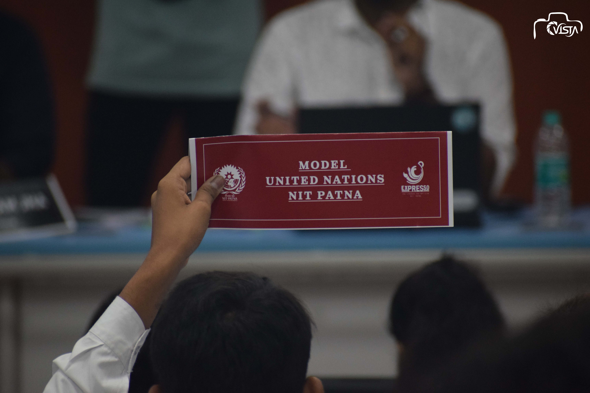
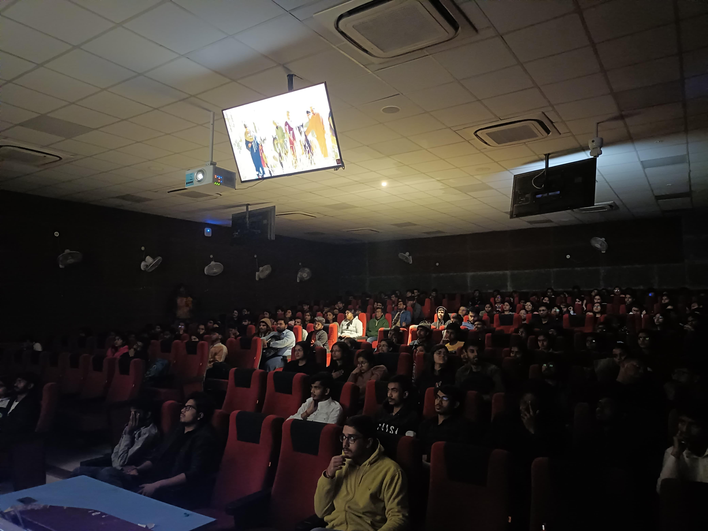

ARTOPIA 2025
ARTOPIA was a vibrant three-day online art workshop organized by Expresso – The Literary and Art Club, NIT Patna, bringing together artists, creators, and enthusiasts to celebrate the power of artistic expression. The event featured renowned artists who shared their expertise, guiding participants through different artistic styles, techniques, and storytelling methods.
The event featured three exclusive workshops:
- Fusing Tradition with Digital Art – Led by Aman Varma, this session explored the fusion of traditional artistic elements with modern digital tools, showcasing how heritage and technology can blend seamlessly in digital art.
br
- Storyboard Saga – Conducted by Vibha Rao, this workshop delved into the art of visual storytelling through comics and animation, capturing the nuances of characters, emotions, and everyday narratives.
- Heritage Hues – Guided by Vidushini Prasad, this session celebrated the intricate beauty of Madhubani painting, highlighting its rich cultural significance and timeless artistic traditions.
More than just a series of workshops, ARTOPIA was a creative space where imagination thrived, stories unfolded, and artistic passions were ignited. It was a journey of learning, exploration, and inspiration—one that encouraged participants to push their creative boundaries and embrace the magic of art.
MUN 2.0
The vibrant campus of NIT Patna was once again immersed in the spirit of diplomacy and debate as Model United Nations (MUN) 2.0 took place on 13th, 14th, and 15th September 2024 at Ashok Rajpath Campus. This second edition provided students a unique platform to simulate the workings of the United Nations and hone their diplomatic skills.
In this edition, we had four committees to facilitate proceedings:
1. General Assembly (UNGA): For addressing global challenges with collaborative action.
2. Security Council (UNSC): Resolving pressing security issues as world leaders.
3. Joint Parliamentary Committee (JPC): Simulating parliamentary discourse to tackle national concerns.
4. International Press (IP): Reporting the vibrant discussions and providing critical insights into the proceedings.
The event commenced on the first day with an introduction and opening ceremony, setting the stage for three days of insightful discussions. The second day focused on the Joint Parliamentary Committee (JPC), which delved into national concerns with legislative precision, while the International Press (IP) began its diligent coverage of the proceedings.
On the third day, the General Assembly (UNGA) and Security Council (UNSC) tackled global challenges and security concerns, with the IP continuing its comprehensive reporting. The event concluded on a grand note in the evening of the third day, with the winners' announcement, certificate distribution, and prize ceremony, recognizing the outstanding contributions and performances of the participants.
MUN 2.0 offered an unparalleled platform for students to hone their public speaking, negotiation, and analytical skills while gaining practical exposure to the intricacies of international diplomacy and legislative processes. This edition set a new benchmark for intellectual events on campus, leaving an indelible mark on its participants.


MOVIE MATINEE
Expresso’s Signature Event, Secret Valentine, brought an unforgettable cinematic experience to NIT Patna with the screening of Sita Ramam!
As part of the broader Secret Valentine celebration, Movie Matinee was organized by Expresso, the Art and Literary Club of NITP.
On February 9th, 2024, at Meghnad Saha Hall, we gathered to celebrate Valentine’s week filled with drama and love. Starting at 5:30 PM, the event transformed the hall into a hub of excitement and anticipation. The atmosphere was electric as the lights dimmed and Sita Ramam began, promising to deliver not just a movie, but an experience that resonated deeply with each viewer. The film’s compelling narrative of love and connection was perfect for the season of romance.
It was more than just a movie night; it was a communal celebration of storytelling and shared emotions, all orchestrated by Expresso.
The event truly highlighted the magic of cinema in bringing people together, making it an evening to remember.